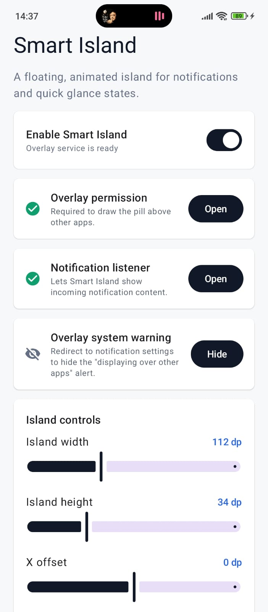
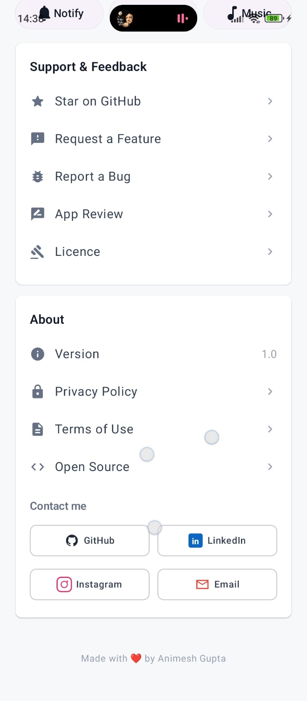
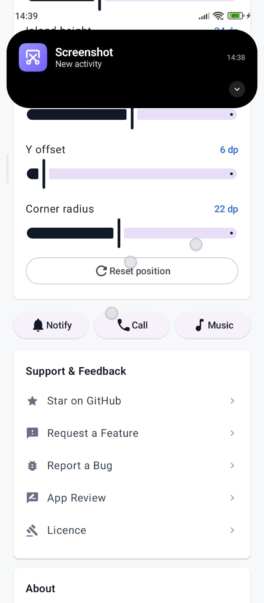

Floating overlay
Draws a compact island above other apps with Android overlay window APIs.
Open-source Android overlay
A lightweight Android app that transforms notifications, calls, and media playback into a floating, glanceable island near the status bar.



What it does
Draws a compact island above other apps with Android overlay window APIs.
Converts active notifications into glanceable cards with open, dismiss, and action support.
Detects call states, media sessions, artwork, playback controls, and progress when available.
Lets users adjust island width, height, position, and corner radius from the app.
Morphs between collapsed and expanded states with Compose spring animations.
Includes notification, call, and music previews so setup can be tested quickly.
Local first
Smart Island processes notification data on the device, stores preferences locally, and currently does not
request the Android INTERNET permission.
Getting started
Install the latest signed package from GitHub Releases.
Allow Smart Island to draw the island above other apps.
Turn on listener access so notifications can become island cards.
Set size, position, corner radius, and test the demo modes.
Open source
The repository includes the Android source, release notes, privacy policy, contribution guide, and security reporting process.